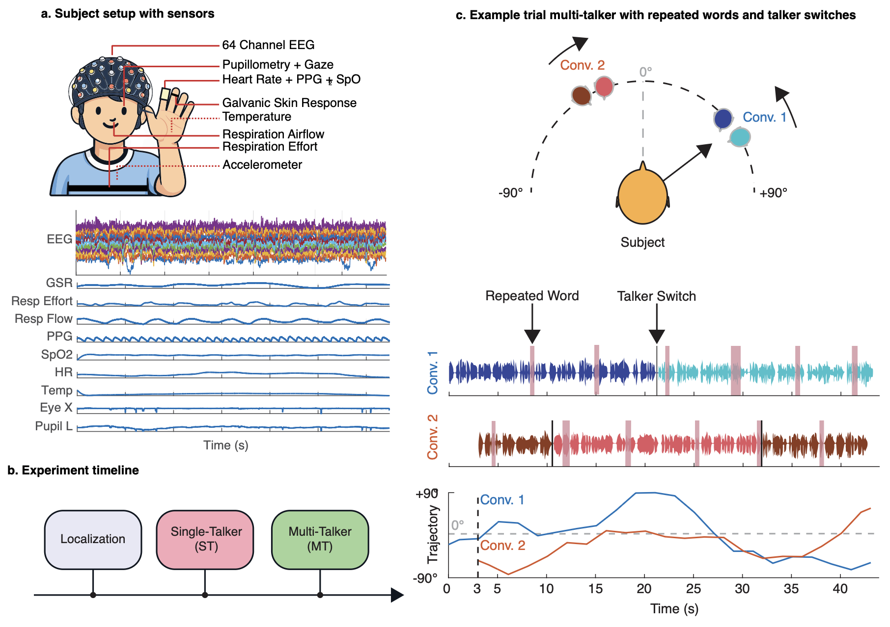

A Large-Scale Multimodal Dataset for Auditory Attention During Moving Conversations
Auditory attention decoding (AAD) is often evaluated on static, simplified speech scenes that poorly match everyday listening conditions. MOV-AAD addresses this gap by providing a large-scale dataset designed to study auditory attention under moving, naturalistic conversations. The dataset combines 64-channel EEG with synchronized physiological recordings, enabling analysis of cross-modal neural and physiological markers of attention and listening effort in ecologically valid listening scenarios.

This dataset can be used for:
The dataset consists of two experimental conditions per participant:
Single Moving Speaker (40 trials): Participants listened to conversational
narratives from a spatially moving source (-90° to +90°) with embedded repeated words for
attention monitoring. Mean trial duration: ~40s.
Multiple Moving Speakers (56 trials): Two independent conversational streams
presented simultaneously, both moving within the same azimuth range. Participants attended to
one stream while ignoring the other. Mean trial duration: 44.2s (SD=2.0s).
| Condition | Trials/Subject | Duration | Percentage |
|---|---|---|---|
| Single Moving Speaker | 40 | ~40s/trial | 42% |
| Multiple Moving Speakers | 56 | ~44s/trial | 58% |
| Localization Task | 54 sentences | Short sentences | - |
All signals recorded at 1200 Hz with synchronized temporal alignment:
| Modality | Specification | Description |
|---|---|---|
| EEG | 64 channels, 1200 Hz | High-density neural recordings (g.tec g.HIamp) |
| Eye Tracking | Binocular, 1200 Hz | Pupil dilation and gaze location (Tobii Pro Nano) |
| Respiration | Flow & Effort, 1200 Hz | Nasal airflow and thoracic belt |
| GSR | 1200 Hz | Galvanic skin response |
| PPG/Heart Rate | 1200 Hz | Photoplethysmography and derived HR |
| SpO₂ | 1200 Hz | Peripheral oxygen saturation |
| Temperature | 1200 Hz | Skin temperature |
| Accelerometer | Triaxial, 1200 Hz | Head motion tracking |
The final dataset structure will be finalized and documented here upon release.
MOV-AAD/
├── participants/
│ ├── sub-001/
│ │ ├── eeg/
│ │ ├── physio/
│ │ ├── behavioral/
│ │ └── stimuli/
│ ├── sub-002/
│ └── ...sub-050/
├── stimuli/
├── preprocessing_scripts/
├── README.md
└── dataset_info.jsonDownload the complete dataset from Zenodo:
Download from Zenodo (Available Upon Publication)DOI: [Will be added upon publication]
Dataset will be released upon paper acceptance
Download using wget or curl (available after publication):
# Using wget
wget [ZENODO_URL]
# Using curl
curl -O [ZENODO_URL]
# Extract
unzip MOV-AAD-dataset.zipExample code for loading the dataset:
# Example loading code will be provided
# upon dataset release with full documentationLicense information will be specified upon dataset release.
We provide baseline results using standard decoding approaches to facilitate comparison with future work. All analyses use leave-one-trial-out cross-validation.